Тип Условие Ответ B9 917. В прямоугольном параллелепипеде
известно, что 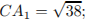 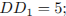
Найдите длину ребра 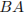.
Тип Условие Ответ B9 904. 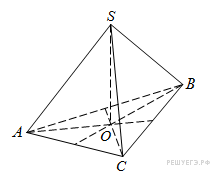В правильной треугольной пирамиде
медианы основания 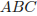 пересекаются в точке
. Площадь треугольника равна 2; объем пирамиды равен 4. Найдите длину отрезка 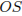.
Тип Условие Ответ B9 245365. 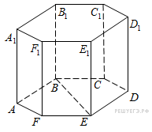В правильной шестиугольной призме все ребра равны 1. Найдите расстояние между точками
и
.
Тип Условие Ответ B9 918. В прямоугольном параллелепипеде
известно, что 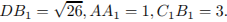 Найдите длину ребра
.
Тип Условие Ответ B9 500165. В прямоугольном параллелепипеде
известно, что 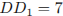, 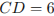, 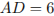. Найдите длину диагонали
.
Тип Условие Ответ B9 245370. 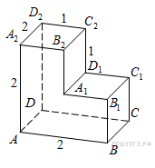Найдите расстояние между вершинами
и
многогранника, изображенного на рисунке. Все двугранные углы многогранника прямые.
Тип Условие Ответ B9 318475. В правильной четырёхугольной призме
известно, что
. Найдите угол между диагоналями 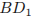 и . Ответ дайте в градусах.
Тип Условие Ответ B9 245371. 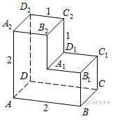Найдите квадрат расстояния между вершинами
и
многогранника, изображенного на рисунке. Все двугранные углы многогранника прямые.
Тип Условие Ответ B9 315130. В кубе
точка
— середина ребра 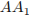, точка
— середина ребра 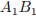, точка
— середина ребра . Найдите угол 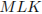. Ответ дайте в градусах.
Тип Условие Ответ B9 284351. В правильной треугольной пирамиде
— середина ребра
,
— вершина. Известно, что 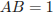, а 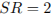. Найдите площадь боковой поверхности.
Тип Условие Ответ B9 914. 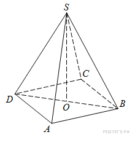В правильной четырехугольной пирамиде 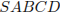 точка
— центр основания,
— вершина, 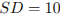, 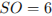. Найдите длину отрезка
.
Тип Условие Ответ B9 911. 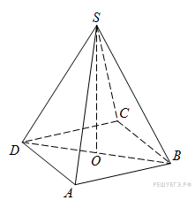В правильной четырехугольной пирамиде точка
– центр основания,
– вершина, , . Найдите боковое ребро .
Тип Условие Ответ B9 284352. В правильной треугольной пирамиде
— середина ребра
,
— вершина. Известно, что , а площадь боковой поверхности равна . Найдите длину отрезка .
Тип Условие Ответ B9 315131. В прямоугольном параллелепипеде
ребро , ребро , ребро . Точка
— середина ребра Найдите площадь сечения, проходящего через точки
и
.
Тип Условие Ответ B9 912. В правильной четырехугольной пирамиде точка
– центр основания,
– вершина, Найдите длину отрезка .
Тип Условие Ответ B9 284354. В правильной треугольной пирамиде
медианы основания пересекаются в точке
. Площадь треугольника равна 3, объем пирамиды равен 1. Найдите длину отрезка .
Тип Условие Ответ B9 902. В правильной треугольной пирамиде
медианы основания пересекаются в точке
. Площадь треугольника равна 9; объем пирамиды равен 6. Найдите длину отрезка .
Тип Условие Ответ B9 915. В правильной четырехугольной пирамиде точка
– центр основания,
– вершина, =12,
=18. Найдите боковое ребро
Тип Условие Ответ B9 920. В правильной треугольной пирамиде
точка
– середина ребра ,
– вершина. Известно, что
=3, а площадь боковой поверхности пирамиды равна 45. Найдите длину отрезка .
Тип Условие Ответ B9 923. В правильной треугольной пирамиде
– середина ребра ,
– вершина. Известно, что
=5, а =6. Найдите площадь боковой поверхности пирамиды.
Тип Условие Ответ B9 318474. В прямоугольном параллелепипеде
известны длины рёбер
, , . Найдите синус угла между прямыми
и
.
Тип Условие Ответ B9 284363. В прямоугольном параллелепипеде
известно, что , ,
Найдите длину диагонали
Тип Условие Ответ B9 913. В правильной четырехугольной пирамиде точка
– центр основания,
– вершина, , . Найдите боковое ребро .
Тип Условие Ответ B9 901. В правильной треугольной пирамиде
медианы основания пересекаются в точке
. Площадь треугольника равна 2; объем пирамиды равен 6. Найдите длину отрезка .
Тип Условие Ответ B9 284353. В правильной треугольной пирамиде
точка
— середина ребра
,
— вершина. Известно, что , а площадь боковой поверхности равна 3. Найдите длину отрезка .
Тип Условие Ответ B9 924. В правильной треугольной пирамиде
– середина ребра ,
– вершина. Известно, что
=7, а площадь боковой поверхности пирамиды равна 42. Найдите длину отрезка .
Тип Условие Ответ B9 284350. В правильной четырехугольной пирамиде точка
— центр основания,
вершина, , . Найдите длину отрезка
.
Тип Условие Ответ B9 245382. Найдите квадрат расстояния между вершинами
и
многогранника, изображенного на рисунке. Все двугранные углы многогранника прямые.
Тип Условие Ответ B9 905. В правильной треугольной пирамиде
медианы основания пересекаются в точке
. Площадь треугольника равна 4; объем пирамиды равен 6. Найдите длину отрезка .
Тип Условие Ответ B9 316552. В прямоугольном параллелепипеде
известны длины рёбер: , , . Найдите площадь сечения, проходящего через вершины
, и
.
Тип Условие Ответ B9 284348. В правильной четырехугольной пирамиде точка
— центр основания,
вершина, , Найдите боковое ребро .
Тип Условие Ответ B9 284355. В правильной треугольной пирамиде
медианы основания пересекаются в точке
. Площадь треугольника равна , . Найдите объем пирамиды.
Тип Условие Ответ B9 903. В правильной треугольной пирамиде
медианы основания пересекаются в точке
. Площадь треугольника равна 2; объем пирамиды равен 5. Найдите длину отрезка .
Тип Условие Ответ B9 284356. В правильной треугольной пирамиде
медианы основания пересекаются в точке
. Объем пирамиды равен , . Найдите площадь треугольника .
Тип Условие Ответ B9 500249. Диагональ
основания правильной четырёхугольной пирамиды равна
. Высота пирамиды равна . Найдите длину бокового ребра
.
Тип Условие Ответ B9 284349. В правильной четырехугольной пирамиде точка
— центр основания,
вершина, ,
. Найдите длину отрезка .
Тип Условие Ответ B9 922. В правильной треугольной пирамиде
– середина ребра
,
– вершина. Известно, что =4, а площадь боковой поверхности пирамиды равна 54. Найдите длину ребра